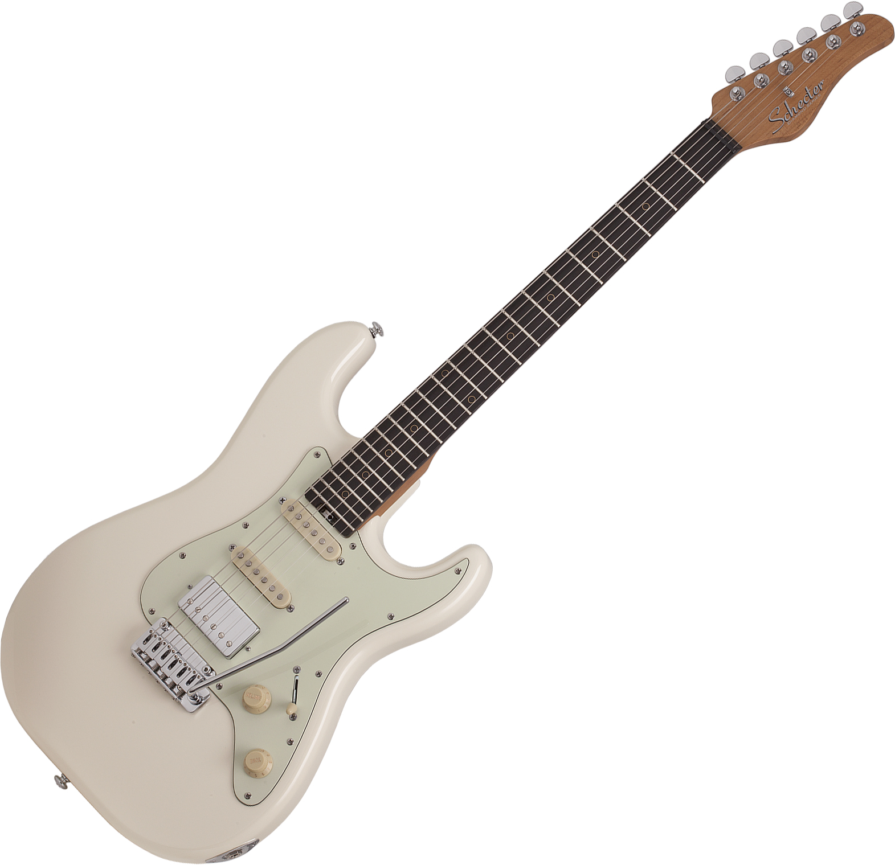

- 2020년 -
2020.01
- [유튜브 업로드] Holiday - Green Day
2020.02
- [유튜브 업로드] 어려운 달 - 쏜애플(THORNAPPLE)
2020.03
- [유튜브 업로드] オレンジ(Orange) - 7!!
- [유튜브 업로드] 너의 무리 - 쏜애플(THORNAPPLE)
2020.04
2020.05
- [밴드 합류] 2ºC(2 docci) - 쏜애플(THORNAPPLE) 커버 밴드.
2020.06
2020.07
- [장비 판매] 5번째 기타 판매. - Swing Modern
- [장비 판매] 3번째 기타 판매. - Fender Japan Mustang(MG69)
- [장비 구매] 6번째 기타 구매. - Schecter Nick Johnston Signature HSS

- [장비 판매] 2번째 기타 판매. - unknown brand&model Stratocaster
2020.08
- [유튜브 업로드][1st collaboration, with RN(レナ)]
お勉強しといてよ(Study Me) - ずっと真夜中でもいいのに。(zutomayo)
2020.09
- [유튜브 업로드] 花に亡霊(Ghost in a flower) - ヨルシカ(Yorushika)
2020.10
2020.11
- [유튜브 업로드] 아가미 - 쏜애플(THORNAPPLE)
2020.12
- [유튜브 업로드][2nd collaboration, with RN(レナ)]
カワキヲアメク - 美波(Minami)
- 연습했던 곡 -
- Holiday - Greenday
- 어려운 달 - 쏜애플(THORNAPPLE)
- 너의 무리 - 쏜애플(THORNAPPLE)
- 아가미 - 쏜애플(THORNAPPLE)
- 도롱뇽 - 쏜애플(THORNAPPLE)
- 피난 - 쏜애플(THORNAPPLE)
- オレンジ(Orange) - 7!!
- お勉強しといてよ(Study Me) - ずっと真夜中でもいいのに。(zutomayo)
- 花に亡霊(Ghost in a flower) - ヨルシカ(Yorushika)
- カワキヲアメク - 美波(Minami)